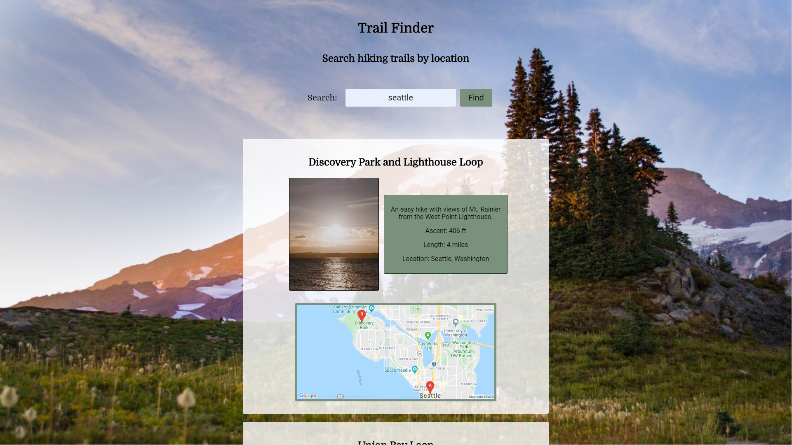

Projects
Get Meals App
Get Meals is a full stack application,
created so that people who were most affected by
COVID-19 are able to find free meals near them. It is a community-driven site, so anyone
can add a location and will be added to the database. Users can also search a location
and find meals near them that the community has added.
Milal Volunteers
Milal App is a full stack application
allowing volunteers to track their own hours.
Admins can also view all their volunteers and the hours they have accumulated. Admins
can also see when those hours were added and the amount added.
 >
> >
>

Trail Finder
Trail Finder app allows the user the search
a location and find any hiking trails nearby
to explore. The app implements a Google Maps API to show where the trail is relative to
your location. It supplies a short description, the ascent, length, and location using
the Hiking Project API.
Quiz App
A simple quiz application where anyone can
test their knowledge about Spider-Man.